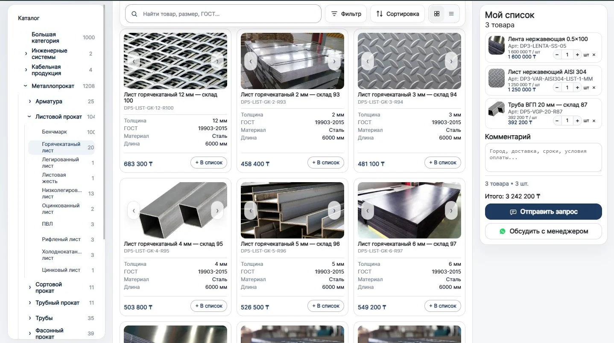
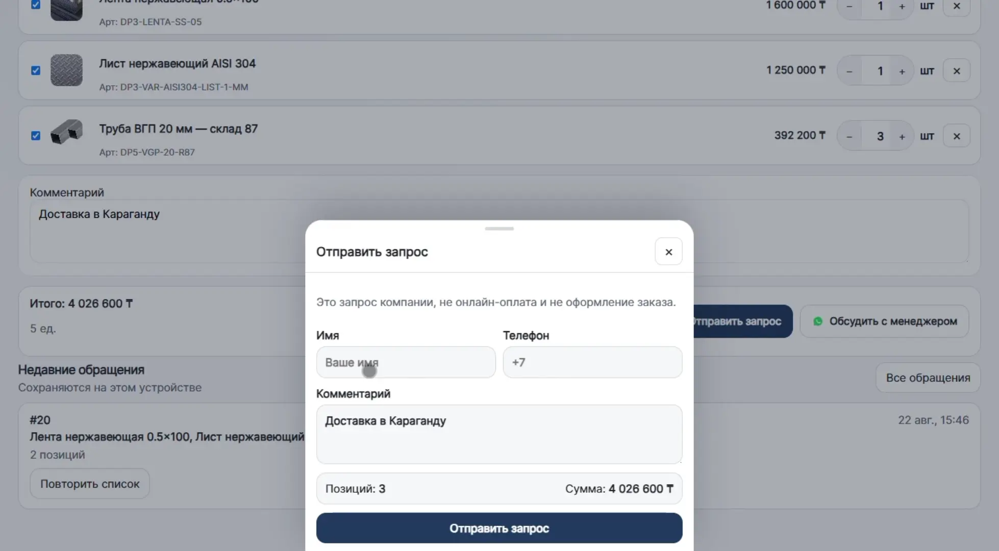

Ассортимент доступен по ссылке
Покупатель может открыть каталог и изучить товары самостоятельно.
Из Excel или CSV — в каталог с поиском, фильтрами, карточками товаров и заявками менеджеру. Без разработки сайта с нуля.
*При готовых данных. Срок зависит от объёма и состояния файла.

Когда товары живут в Excel, PDF и переписках, менеджер снова и снова помогает найти позицию, отправляет характеристики и уточняет детали.
Особенно когда покупателю важны параметры товара, а цена, наличие и условия уточняются у менеджера.
Покупатель может открыть каталог и изучить товары самостоятельно.
Поиск, фильтры, характеристики и документы помогают разобраться в ассортименте.
Покупатель собирает нужные позиции и отправляет готовую заявку.
Свой домен, фирменное оформление и отдельные страницы товаров.
Начинаем с данных, которые у вас уже есть. Не нужно вручную создавать каждую карточку товара.
Ваш текущий ассортимент.
Товары, категории и характеристики.
Поиск, фильтры и страницы товаров.
Базовая SEO-настройка создаётся автоматически вместе с каталогом. Это техническая основа для поиска, без обещаний конкретных позиций или трафика.
Не нужно заново собирать сайт, когда меняются товары или данные. Обновление зависит от формата и объёма исходного файла.
Работаем с вашим текущим файлом ассортимента.
МойСклад и 1С — следующий этап развития Sito.
Менеджер подключается уже к конкретному запросу — для консультации, наличия, цены и условий.
Поиск и фильтры по ассортименту.
Изучил карточки и характеристики.
Добавил нужные позиции и количество.
Менеджер получил конкретный запрос.
Это реальный интерфейс Sito: поиск, фильтры, карточки товаров и список выбранных позиций.

Каталог можно оформить как часть вашей компании: подключить свой домен, настроить фирменные цвета и собрать главную страницу под ассортимент и задачи бизнеса.
Подготовка каталога под ваш ассортимент и ежемесячная подписка на платформу.
Подготовка и запуск каталога под ассортимент компании + использование платформы.
Обсудить подключение →Первые 5 компаний подключаются без оплаты настройки: вы используете полноценный каталог, а мы собираем обратную связь и дорабатываем Sito на реальных B2B-сценариях. Цена 29 000 ₸/мес фиксируется на 12 месяцев.
Хочу в пилот →Нет, если ассортимент есть в Excel или CSV. Данные загружаются из существующего файла.
Нет. Покупатель самостоятельно проходит предварительный выбор, а менеджер подключается к консультации, наличию, цене, условиям и сделке.
Каталог можно обновлять при изменении ассортимента. Условия обновления зависят от формата и объёма ваших данных.
Пока каталог работает с импортом данных из Excel или CSV. Интеграции с МойСклад и 1С — следующий этап развития Sito.
Сначала смотрим структуру файла и оцениваем, какие данные можно использовать для каталога. Срок запуска зависит от состояния исходных данных.
Нет. Sito можно использовать как отдельный каталог для ассортимента и отправлять покупателям прямую ссылку.
Готовый Excel или CSV с товарными данными. Фактический срок зависит от объёма и состояния файла.
Базовая SEO-настройка товарных страниц создаётся автоматически по умолчанию. Это техническая основа для индексации, а не обещание конкретных позиций или трафика из поиска.
Отправьте Excel или CSV — посмотрим данные и покажем, как их можно превратить в готовый каталог.
Посмотреть свой каталог →